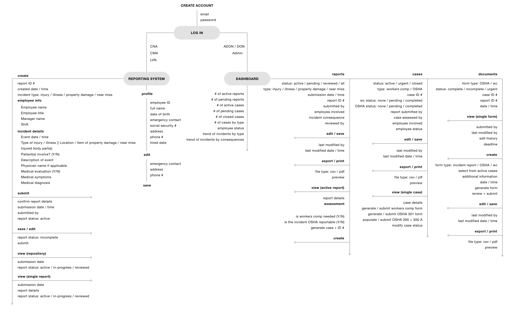
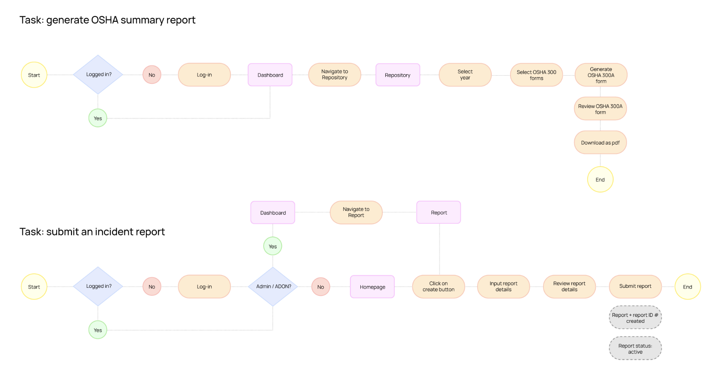
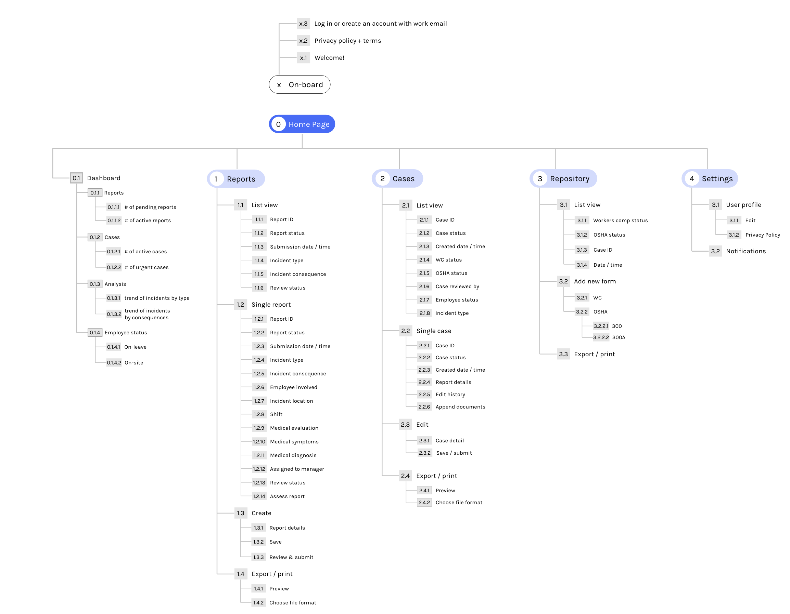

An incident and safety reporting system for nursing home employees
OVERVIEW
Safety is a major concern in the work place. Incidents happen all the time but they often are underreported because there isn't a sufficient reporting system in place. Most organizations still use paper forms to record and track incidents and are usually delegated to the supervisors which often neglected worker's safety. SALUS is a concept of a reporting system developed in the course of Human Centered Design at University of Miami to address those issues.
ROLE
UX Design
Wireframes
High fidelty prototype
TIMELINE
6 Week
Dec 2020
TECHNOLOGY
Adobe Illustrator
Adobe XD
LINKS
Secondary Research
Task Flows
Style Guide
Interactive Prototype
PRODUCT DESCRIPTION
SALUS – the Roman Goddess of public health and safety – is a system designed for the nursing home employees. The reporting system is optimized for desktop in office setting and requires the following basic interactions:
- User log in & profile feature
- Dashboard analytics
- Create and submit new incident reports
- Assess reports and save / edit in-progress reports
- Append necessary documents such as Workers Comp and OSHA 301
RESEARCH
The users from the contextual inquiry conducted by Dr. Millet voiced that they can never find the forms or that they usually ask their manager to write up the reports for them. So the challenge here is to design a web-based reporting system that provides an easier access and management of the incident reports for the employees and address the safety of the work environment.
Target users
- Certified Nurse Aids (CNA)
- Certified Medical Aids (CMA)
- Licensed Vocational Nurses (LVN)
- Assistant Director of Nursing & Director of Nursing (ADON & DON)
- Administrators
Incident types
- Injuries / illnesses: accidents that actually occurred
- Property damages: incidents that led to physical property damages
- Near misses: incidents that could have potentially lead to injuries / illnesses
CONCEPT MAP
I created this concept map to visualize what kind of information / steps the administrators are required to review and submit reports, what information are tracked by the system and what type of interactions are needed in order to complete the tasks.
TASK FLOW
Informed by the concept map, I created these task flows to have a better understanding of the key features and interactions using Adobe Illustrator.
SITE MAP
I created the site map using Adobe XD to have a visual structure of the layout of the system.
